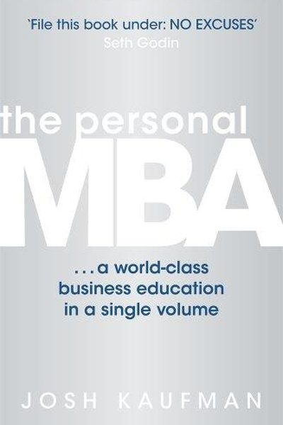

Library › Business & Startups
The Personal MBA — Summary & Key Lessons

Master the art of business — everything you need to know, without the two years and ₹50 lakh.
📖 OPEN THE FULL INTERACTIVE BREAKDOWN →🌐 Read it in Hindi, Hinglish, Gujarati, Tamil & 22 more languages — free, with audio.
💡 The Big Idea
Josh Kaufman spent years distilling what a business education actually teaches into its essential core — and concluded that business comes down to one sentence: 'A business is a repeatable process that creates and delivers value, and captures some of that value as profit.' His book breaks business into five parts (value creation, marketing, sales, value delivery, finance) and 10 core mental models — from the Iron Law of the Market (build something people want) to the 4 Methods of Value Creation and the Profit Margin analysis. No case-study padding, just the operating system.
🧠 The 6 Key Lessons
Lesson 1: The Iron Law: Solve a Real Problem
Value Creation
Kaufman's first law: the only way to build a lasting business is to solve a real, valuable problem for real people — better than the alternatives. Everything else (marketing, branding, fundraising) is downstream. Businesses fail when they fall in love with their solution while the problem was imaginary. The customer doesn't care about your product; they care about their problem.
📖 Example: Kaufman's framework asks three questions about any business: Who is the customer? What problem do they have? Why is the current solution inadequate? If you can't answer all three sharply, the business doesn't exist yet — no matter how much you've built. Read the full example →
⚡ Do this: Write your business in three lines: who, what problem, why current solutions fail. If any line is vague, that's today's problem to research.
Lesson 2: The 4 Methods of Value Creation
Value Creation
There are only four ways to create value: create something new (product), improve something existing (better/faster/cheaper), remove something harmful (cleanup, security, repair), or share something rare (access, exclusivity). Every successful business is one of these four — and most failed ones were doing a fifth thing: assuming value without creating it.
📖 Example: Kaufman maps the landscape: Apple creates (products), Toyota improves (process), pest control removes, consultants share. When you're stuck for a business idea, the four methods are the search space — and the best ideas combine them. Read the full example →
⚡ Do this: Classify your current project (or idea) into the 4 methods. If it doesn't fit any cleanly, refine it until it does — that's the value test.
Lesson 3: Marketing: Promise, Match, Message
Marketing
Kaufman's marketing model: marketing is a promise of value delivered to a specific audience. His 3-step loop: Promise (what will you give them?), Match (target only people who care — aiming at everyone is aiming at no one), and Message (the promise expressed in the customer's language). Most marketing fails because the message talks about the product instead of the customer's problem.
📖 Example: The classic frame: people don't buy drills, they buy holes. The message must speak the customer's language ('holes'), not the maker's ('drill bits') — and it must reach the people with holes, not everyone with ears. Read the full example →
⚡ Do this: Write your promise in one sentence, in the customer's words. List who cares most about it (the smallest precise group). Test the message on one of them this week.
Lesson 4: Sales: The 5-Step Process
Sales
Kaufman demystifies selling: it's not manipulation, it's a process of 5 steps — (1) establish trust/rapport, (2) identify the problem, (3) propose your solution as the best fit, (4) justify the price by the value, (5) make it easy to say yes (reduce risk: guarantees, trials, installments). Sales fails when steps are skipped — especially step 2, selling a solution before understanding the problem.
📖 Example: The author's rule: 'People don't like to be sold, but they love to buy.' The best salespeople spend most of the conversation in step 2 — asking, listening, and letting the customer articulate the problem their own solution then answers. Read the full example →
⚡ Do this: In your next 'sales' conversation (even a job interview), spend the first half asking questions. Propose only after they've described the problem in their own words.
Lesson 5: Finance: The 5 Numbers That Matter
Finance
Kaufman cuts finance to 5 numbers you must know cold: Revenue (money in), Expenses (money out), Profit (revenue − expenses), Cash Flow (when money actually moves), and Assets (what you own that produces value). Most business disasters aren't mysterious — they're a missing understanding of one of these five, especially the difference between profit and cash flow.
📖 Example: The author's warning: profit is not cash — a profitable company can die if customers pay late while bills arrive early (the classic 'profitable but bankrupt' trap). And revenue is vanity, profit is sanity: chasing revenue without margin is a treadmill. Read the full example →
⚡ Do this: Write your 5 numbers this week (for your business, or your personal finances): revenue, expenses, profit, cash flow timing, assets. Identify the weakest and fix one thing.
Lesson 6: The Value Creation Machine: Business Is a System, Not a Hero
Part 2: The Model
Kaufman's core mental model: every business is a system for creating and delivering value — a repeating loop of providing value to customers and capturing a portion of it as profit. The components are universal: value creation (what you make or do), marketing (how people learn about it), sales (how they agree to pay), value delivery (how they get it), and finance (how the money works). The breakthrough is seeing the business as a machine with parts you can improve one at a time — instead of a heroic story where success depends on brilliance or luck. When something fails, diagnose the machine: which component leaked? The system view turns entrepreneurship from a mystery into engineering.
📖 Example: Kaufman shows how the same product can become a different business by changing the system around it — a course sold once (product), sold on subscription (service), or taught live to companies (custom) — the value machine, not the product, is the business. Read the full example →
⚡ Do this: Draw your business (or job) as a five-part machine: value, marketing, sales, delivery, finance. Rate each 1-10 and pick the weakest part to improve this month — that's your highest-leverage fix.
✅ 5-Step Action Plan
- Write your business in three lines: who, problem, why current solutions fail.
- Classify your value into the 4 methods — refine until it fits.
- Write your one-sentence promise in the customer's language.
- Spend your next sales conversation mostly asking.
- Know your 5 numbers cold — and fix the weakest.
💬 Best Quotes from The Personal MBA
- “The purpose of a business is to create and deliver value in an efficient enough way that it can profit from doing so.”
- “If you can't explain a business concept simply, you don't understand it well enough.”
- “The Iron Law of the Market: identify a real problem, then solve it.”
Interactive version: mark lessons as read, listen in your language, share quote cards.